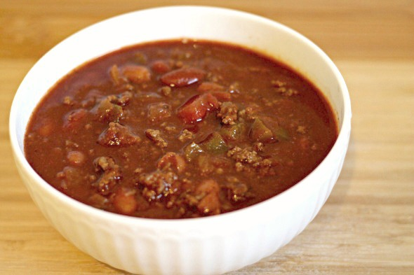

Wendy's Chili Copycat

Description
This copycat version of Wendy's chili is sure to please even the pickiest of eaters. It's hearty, flavorful, and packed with protein and fiber. Plus, it's relatively easy to make and can be on the table in about an hour.
Ingredients
- 2 lbs ground beef, 95% lean
- 29 ounces tomato sauce, 1 can
- 29 ounces kidney beans, 1 can with liquid
- 29 ounces pinto beans, 1 can with liquid
- 1 medium onion, diced
- 1 whole green chili peppers, diced
- 2 stalks celery, diced
- 3 medium tomatoes, chopped
- 2 teaspoons cumin powder, (2 to 3)
- 3 tablespoons chili powder
- 1 1/2 teaspoons black pepper
- 1 1/2 teaspoons salt
- 2 cups water
Steps
- Brown the ground beef in a skillet over medium heat.
- Drain off the fat.
- In a large pot, combine the beef plus all the remaining ingredients, and bring to a simmer over low heat.
- Cook, stirring every 15 minutes, for 2 to 3 hours.
- Alternate cooking method: Cook in large crockpot on low for 4-5 hours
Nutrition
- Nutrition Facts - Amount Per Serving - % Daily Value *
- Servings 12.0 calories 385
- Total Fat 10 g 15 %
- Saturated Fat 3 g 16 %
- Monounsaturated Fat 0 g
- Polyunsaturated Fat 0 g
- Trans Fat 0 g
- Cholesterol 47 mg 16 %
- Sodium 1109 mg 46 %
- Potassium 1084 mg 31 %
- Total Carbohydrate 47 g 16 %
- Dietary Fiber 15 g 61 %
- Sugars 6 g
- Protein 30 g 60 %
- Vitamin A 20 %
- Vitamin C 19 %
- Calcium 14 %
- Iron 36 %